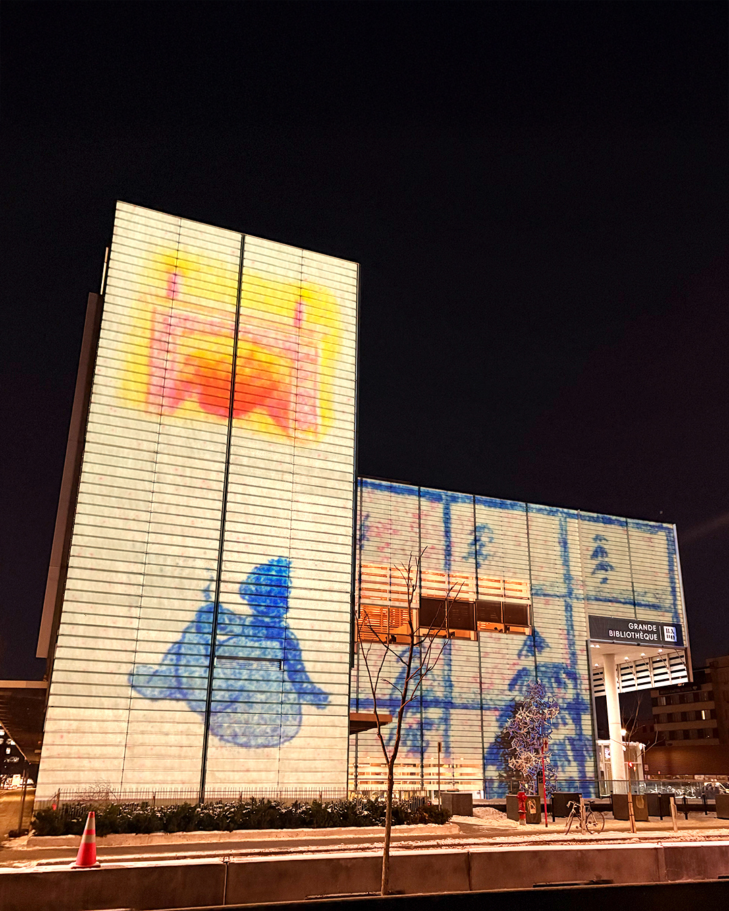
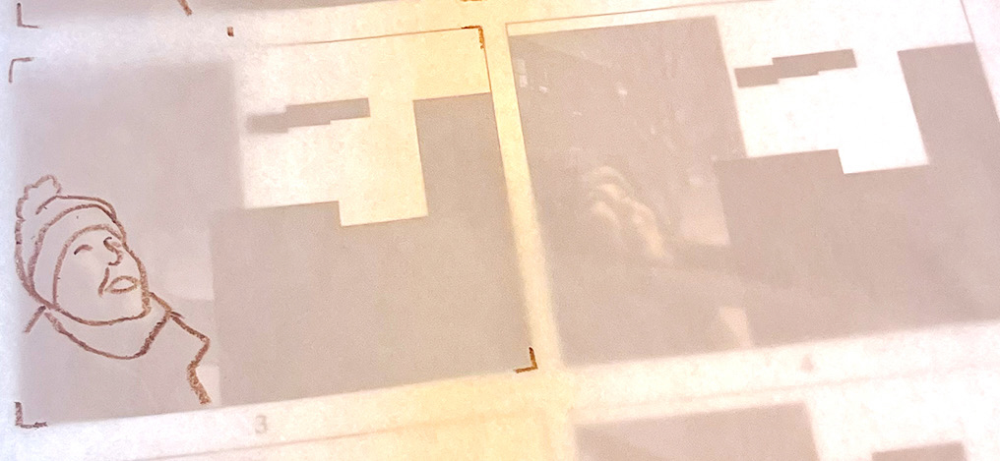
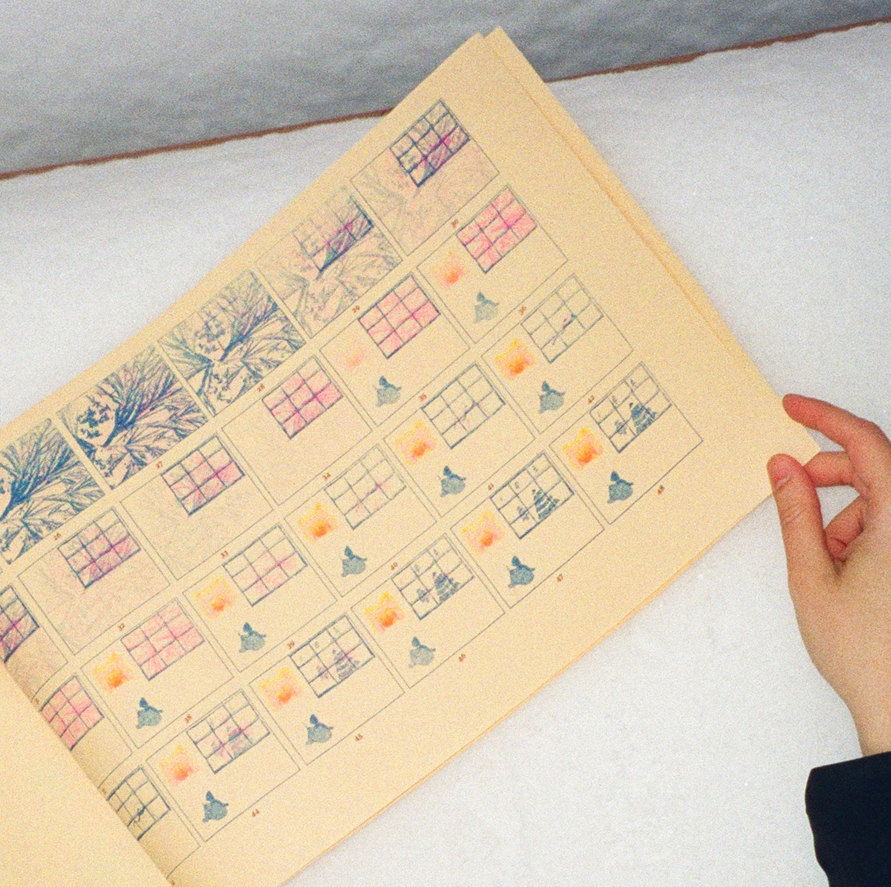
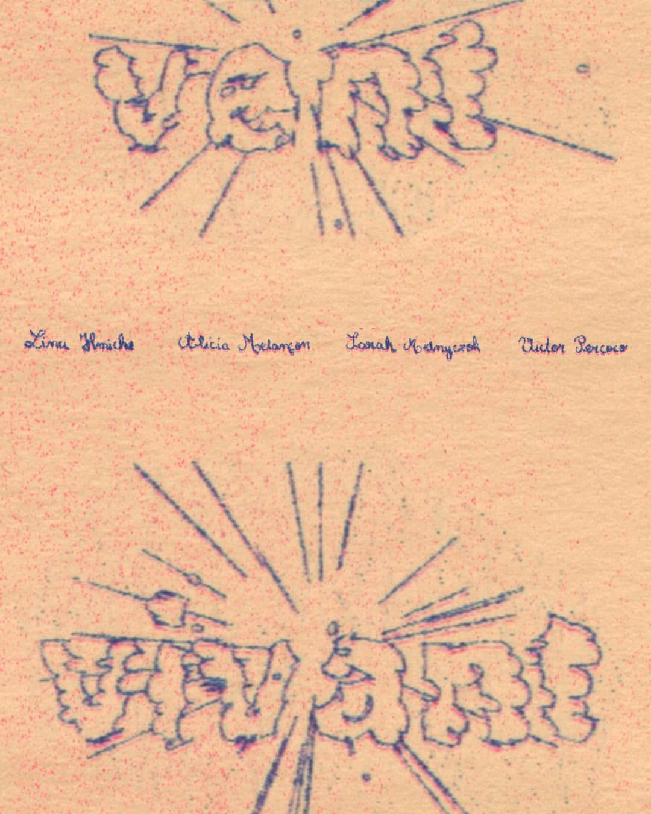

Vent Vivant is a frame-by-frame
animated film crafted from multiple
Risograph prints on manila paper. It
explores movement as refuge. The
project embraces the living grain
and imperfections of RISO printing
as integral rhythmic texture,
layering magenta, blue, and yellow
to generate warmth against
a wintery backdrop.
Completed in the Audiovisual Design course in collaboration with Alicia Melançon, Sarah Melnyczok, and Lina Hmiche, under the supervision of Philippe Hamelin at UQAM's School of Design, Autumn 2025.

From hand-drawn rotoscoping
to monumental projection on the
BAnQ façade, the film transitions
from intimate tabloid-sized sheets
to public space. Blending analog
animation, printmaking, and
architectural mapping, Vent Vivant
celebrates motion, breath, and
the cadence of life in resistance
to stagnation.





Vent Vivant was selected for the
16th edition of the LUMINO Winter
Festival in Montreal.
Watch the full film here.

Credits
Art Direction:
Victor Percoco and Alicia Melançon
Illustrations and Rotoscoping:
Sarah Melnyczok
Music: Lina Hmiche